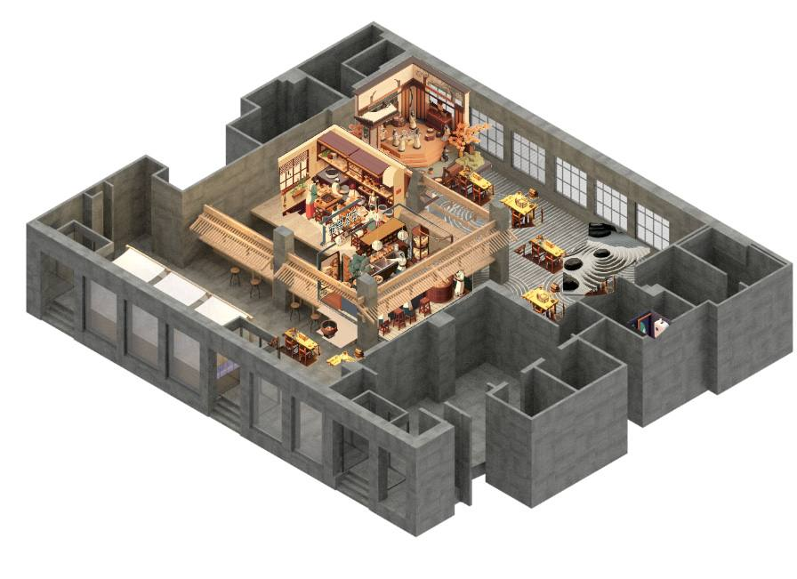
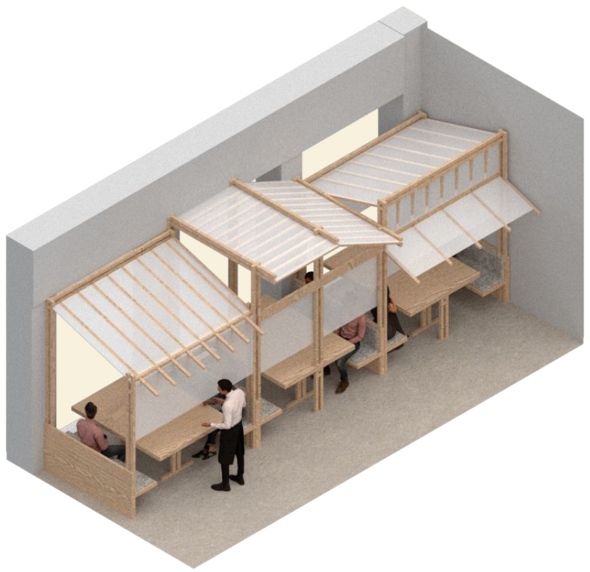
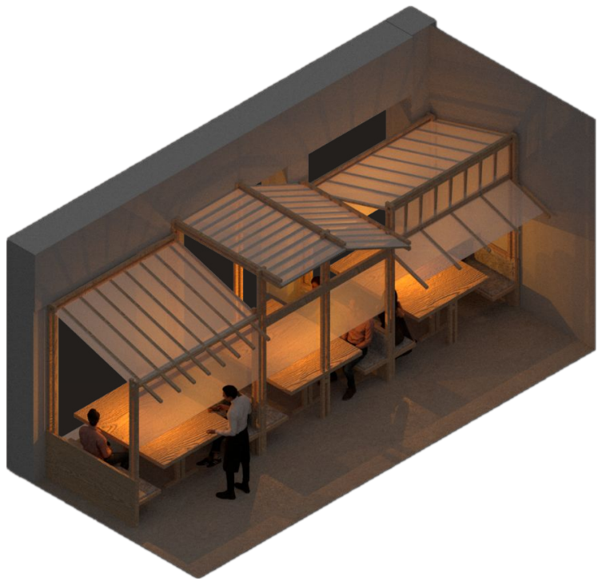
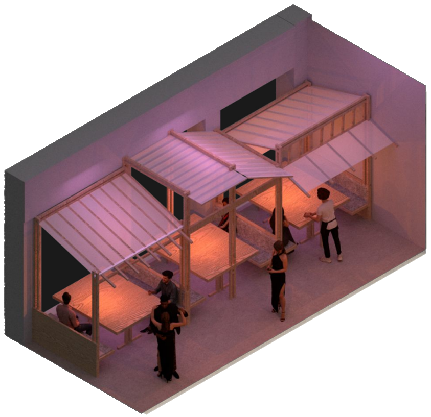
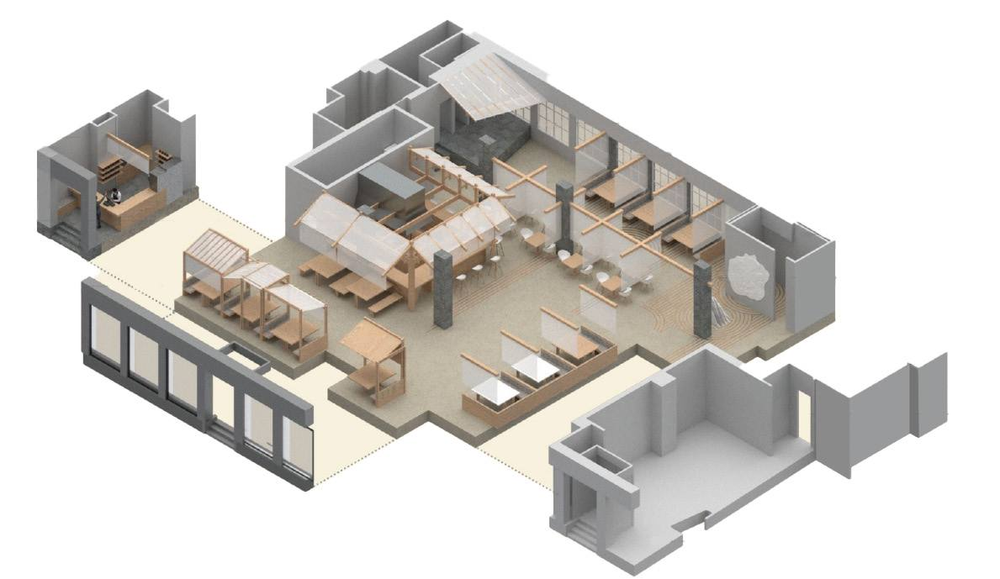
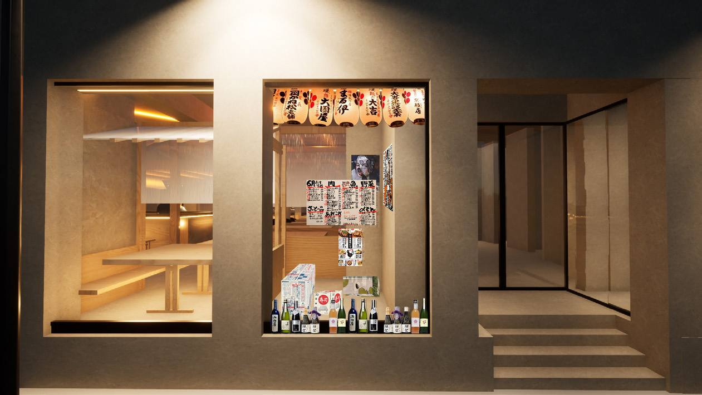
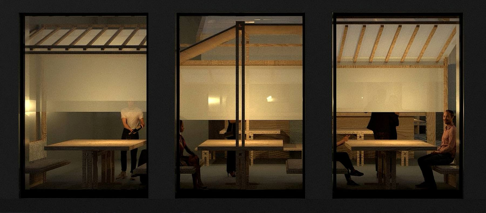
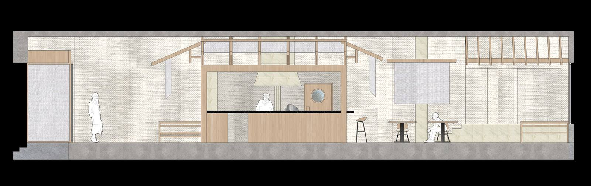
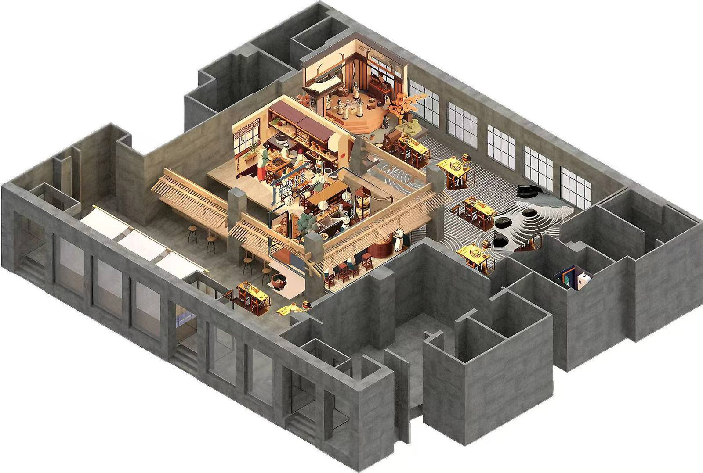

Project 01 — Izakaya & Bar · Melbourne
Intersection
Across cultures & spaces — between day & night

A space of dual identities
My proposal reimagines the diner as a space of dual identities. By day, it opens as a bright izakaya-inspired cafe, filled with natural light and warm tones. By night, it transforms into a neon-lit futuristic bar, offering an entirely different atmosphere.
This contrast is designed to attract young adults seeking both relaxation and connection, creating a memorable experience that encourages return visits. Try the time dial in the corner — the atmosphere of this page changes with the hour, while the works stay exactly as they are.
Day to night
lighting changes
The same view, three hours of the day. Drag the sun along the rail to watch the space travel from morning light to neon night — the original renders, untouched.



Day — natural lightEntry & booths
A compact bubble tea bar anchors the entry sequence, introducing a casual and welcoming atmosphere while connecting directly to the street. This side faces the booth area, where curtains can be drawn during the day to create a quiet and private atmosphere, ideal for meetings and small gatherings. At night, the space transforms into a more open bar setting, with lighting and canopy structures shaping a vibrant scene.




